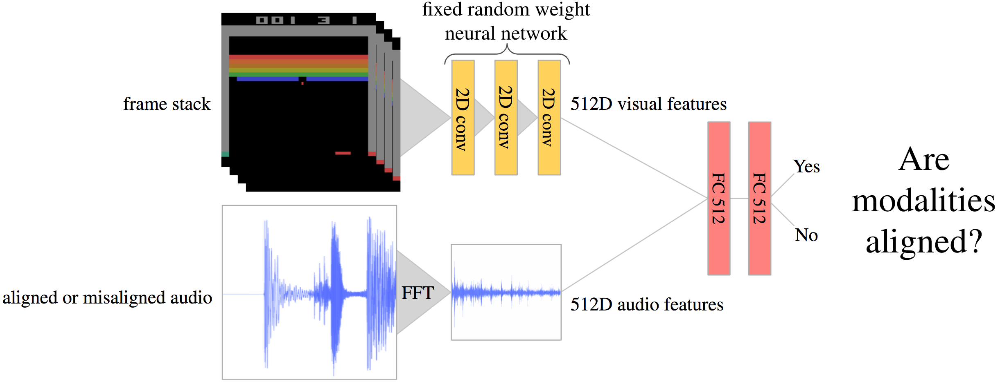
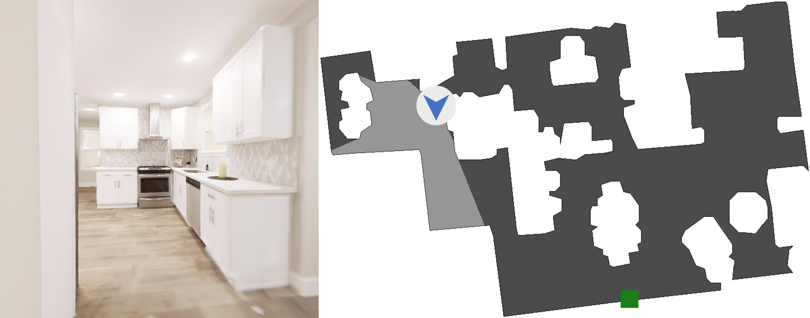
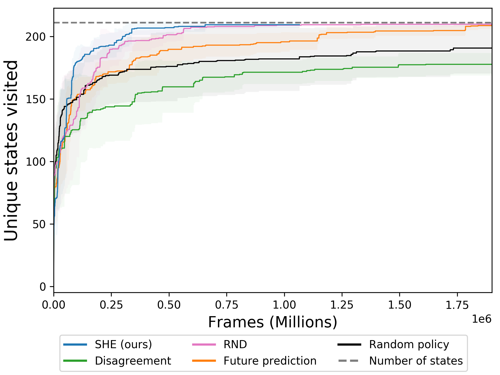
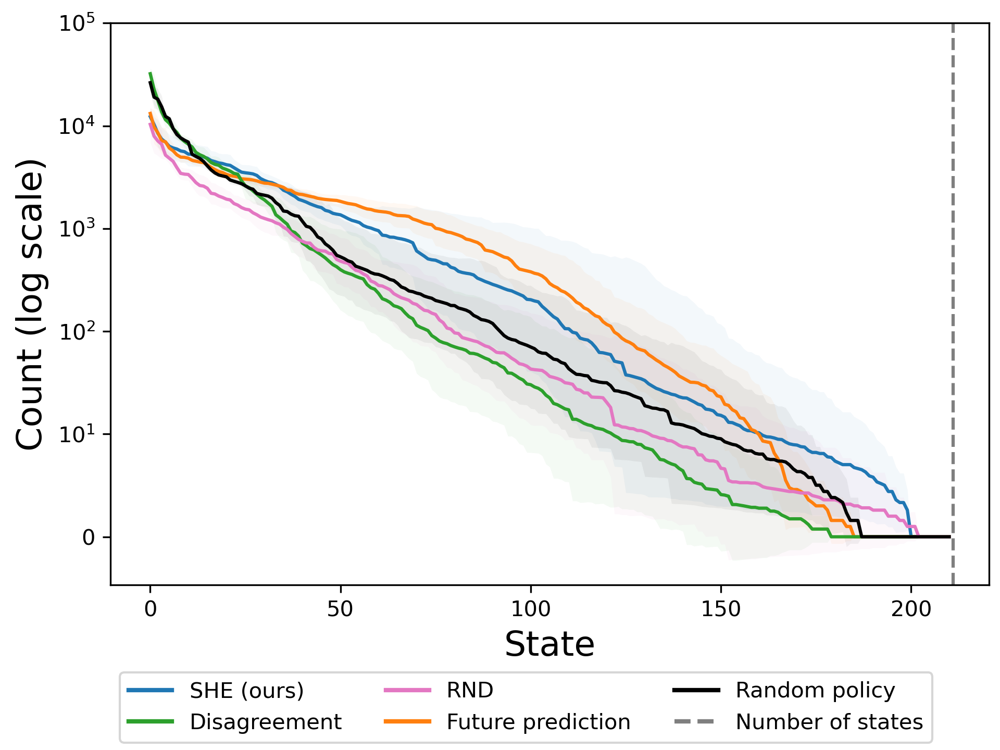
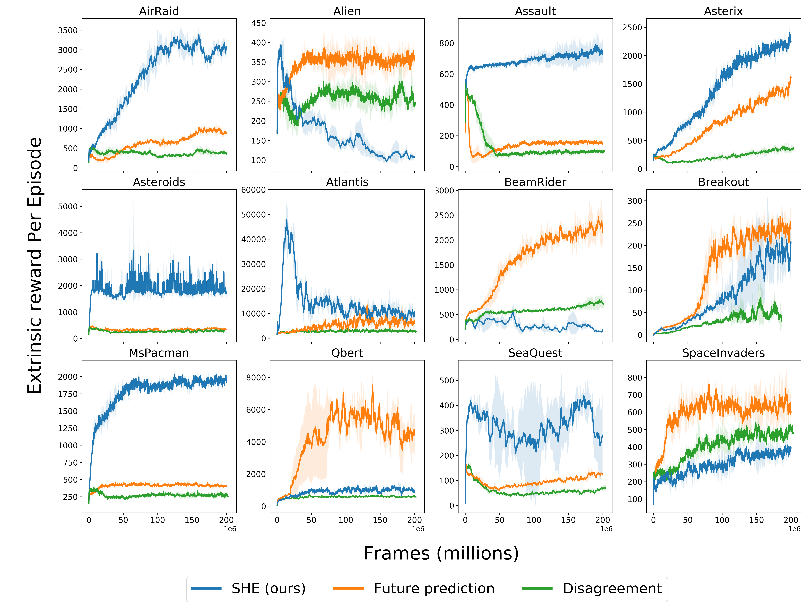

Exploration is one of the core challenges in reinforcement learning. A common formulation of curiosity-driven exploration uses the difference between the real future and the future predicted by a learned model. However, predicting the future is an inherently difficult task which can be ill-posed in the face of stochasticity. In this paper, we introduce an alternative form of curiosity that rewards novel associations between different senses. Our approach exploits multiple modalities to provide a stronger signal for more efficient exploration. Our method is inspired by the fact that, for humans, both sight and sound play a critical role in exploration. We present results on several Atari environments and Habitat (a photorealistic navigation simulator), showing the benefits of using an audio-visual association model for intrinsically guiding learning agents in the absence of external rewards.
See, Hear, Explore
Our core idea is that the SHE agent learns a model that captures associations between two modalities. We use this model to reward actions that lead to unseen associations between the modalities. By rewarding such actions, we guide the exploration policy towards discovering new combinations of sight and sound.

To enable this agent to explore, we train a discriminator that tries to determine whether an observed multimodal pair is novel, and we reward the agent in states where the discriminator is surprised by the observed multimodal association. We train the discriminator to predict alignment probability between the modalities, as shown in the diagram above.
Results
We test our method in two exploration settings (Habitat and Atari) and compare it with Large-Scale Curiosity (future prediction), Exploration Via Disagreement, and Random Network Distillation.
Habitat

We test our method in a navigation setting using a phororealistic Replica scene in the Habitat simulator, shown above. On the left is an example agent view. On the right is the top-down map (not seen by agent). Gray areas are open space, while white areas are obstacles, which make exploration challenging. In all our experiments, the agent is not given any extrinsic reward; we simply want to see how well it can explore without supervision.


On Habitat, our method achieves full state coverage about 3 times faster than future prediction curiosity (left).
On the right, state counts are computed from the first 2000 episodes, sorted by frequency and shown on a log scale. A good exploration method will have higher counts in the rare states. Our method visits these rare states about 8 times more frequently than the next-best baseline. It does so by visiting common states less frequently. SHE's strong performance on this realistic task holds promise for future work exploring the real world.
Atari
Similar to prior work, we demonstrate the effectiveness of our approach on 12 Atari enviroments.

Above are Atari training curves showing average extrinsic reward (never seen by the agent) throughout training for our method, future prediction, and exploration via disagreement. Our method outperforms the baselines in 8 of 12 environments, supporting our hypothesis that audio-visual association is a useful signal for accelerating exploration.